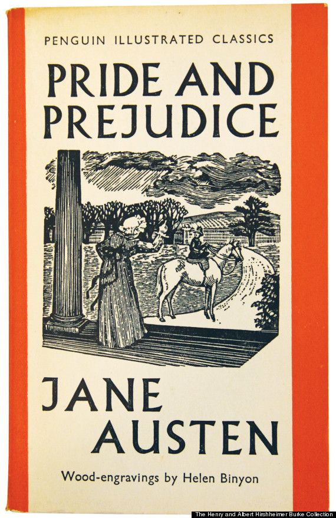
Pride and Prejudice
Jane Austen’s timeless tale of love, wit, and social manners as
Elizabeth Bennet learns that pride and prejudice can cloud true
understanding.
Download
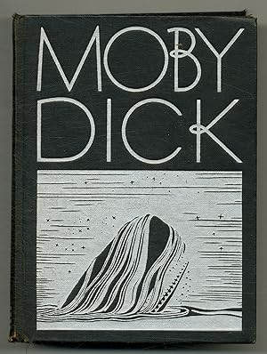
Moby Dick
Herman Melville’s epic of obsession and the sea, where Captain Ahab’s
relentless hunt for the white whale becomes a symbol of man’s defiance
of fate.
Download
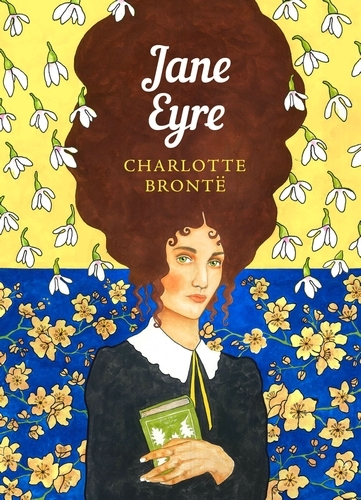
Jane Eyre
Charlotte Brontë’s passionate story of an orphaned governess who finds
love, independence, and moral strength in a world bound by convention.
Download
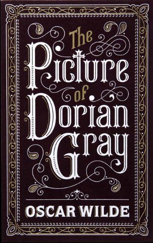
The Picture of Dorian Gray
Oscar Wilde’s dark masterpiece of beauty, vanity, and corruption,
where a portrait bears the marks of sin while its subject remains
forever young.
Download
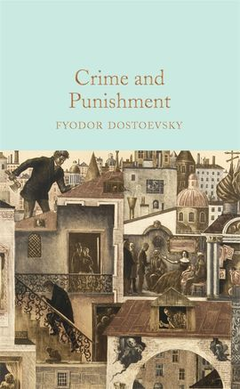
Crime and Punishment
Fyodor Dostoevsky’s intense psychological novel exploring guilt,
redemption, and morality through the tormented mind of Raskolnikov.
Download
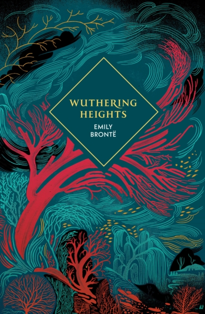
Wuthering Heights
Emily Brontë’s haunting tale of love and revenge set on the stormy
Yorkshire moors, where passion endures beyond life itself.
Download
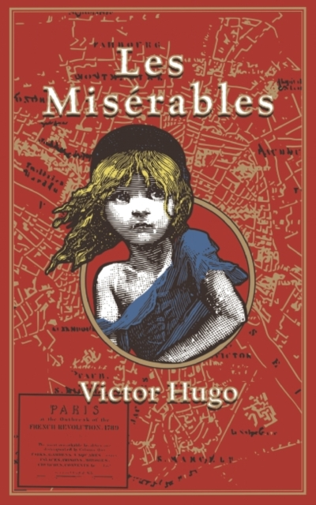
Les Misérables
Victor Hugo’s sweeping epic of justice, mercy, and hope, tracing the
journey of Jean Valjean from prisoner to symbol of redemption.
Download
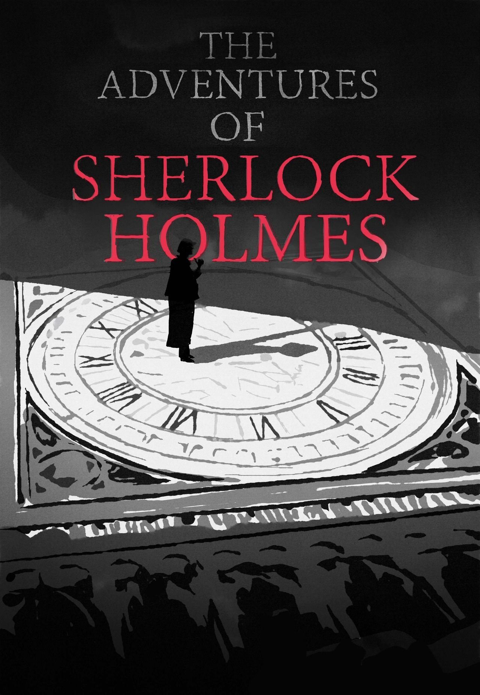
The Adventures of Sherlock Holmes
Arthur Conan Doyle’s classic collection of detective stories featuring
the brilliant and ever-curious Sherlock Holmes and his loyal friend
Watson.
Download
📚 Books
Where every page opens a new world
Wander through endless shelves of imagination — tales whispered across time, waiting to be rediscovered. Browse by title, category, or collection, and lose yourself in stories ready to download in PDF or ePub.
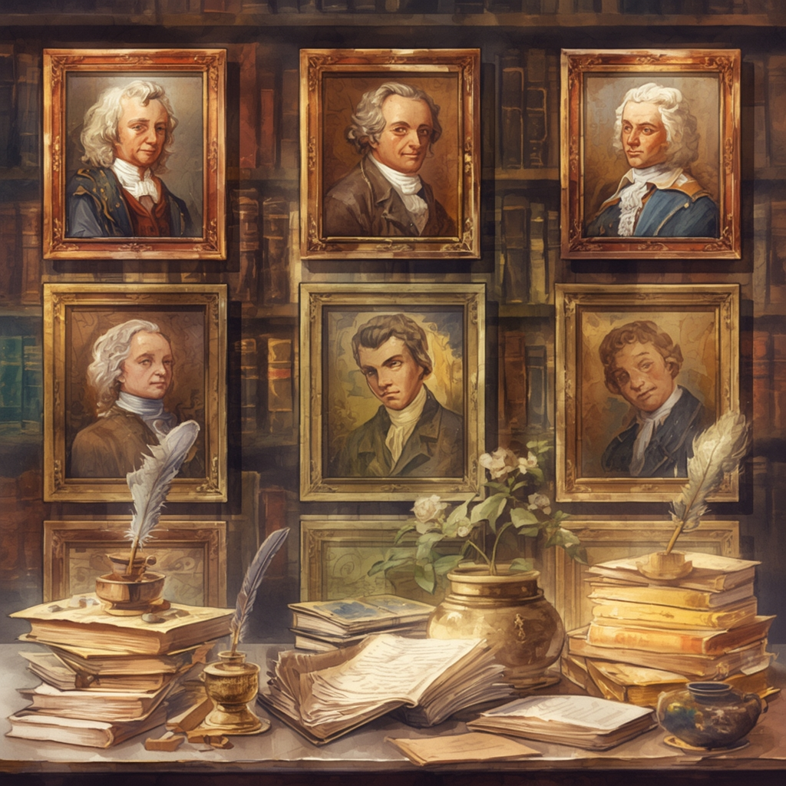
✒️ Authorss
The minds behind the masterpieces
Meet the dreamers, thinkers, and poets whose words built worlds. From timeless classics to hidden gems, explore the authors whose ink still flows through the heart of every reader.
🗂️ Collections
Collections born from passion and purpose
Each collection is a journey — from voices that shaped literature to stories reborn on the silver screen. Discover curated selections crafted to inspire, empower, and move every kind of reader.
White Nights
White Nights by Fyodor Dostoevsky is a short story about a lonely
dreamer in St. Petersburg who spends four nights sharing his hopes and
feelings with a young woman, only to face heartbreak when her true
love returns.
Download
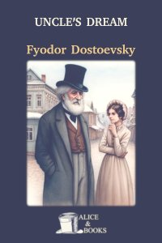
Uncle’s Dream
Uncle’s Dream by Fyodor Dostoevsky is a satirical novella about a
provincial family scheming to marry off a young woman to a foolish old
prince, exposing vanity, hypocrisy, and social pretensions.
Download
The Landlady
The Landlady by Fyodor Dostoevsky is a psychological tale about a
young man who becomes obsessed with a mysterious landlady and her
controlling husband, blurring the line between reality, passion, and
delusion.
Download

The Insulted and Humiliated
The Insulted and Humiliated by Fyodor Dostoevsky is a novel about
love, betrayal, and compassion, following a young writer, his beloved,
and a mistreated orphan as they struggle with pride, suffering, and
forgiveness.
Download
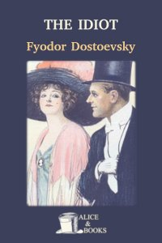
The Idiot
The Idiot by Fyodor Dostoevsky follows Prince Myshkin, a kind and
innocent man whose honesty and compassion clash with the corruption
and passions of Russian society, leading to tragedy.
Download
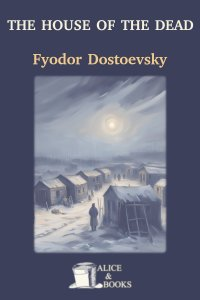
The House of the Dead
The House of the Dead by Fyodor Dostoevsky is a semi-autobiographical
novel depicting life in a Siberian prison camp, portraying the
suffering, resilience, and humanity of convicts.
Download
The Grand Inquisitor
The Grand Inquisitor by Fyodor Dostoevsky is a parable within The
Brothers Karamazov, where Christ returns during the Spanish
Inquisition and is confronted by a cardinal who argues that humanity
prefers authority and security over freedom.
Download
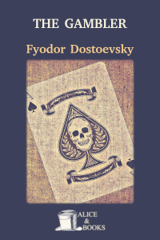
The Gambler
The Gambler by Fyodor Dostoevsky explores obsession and
self-destruction through the story of a tutor consumed by love and
roulette, reflecting the lure and ruin of gambling.
Download